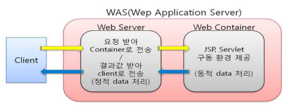

Apache
- 아파치 소프트웨어 재단의 오픈소스 프로젝트이다.
- 웹서버로 불려진다
- 클라이언트 요청이 왔을 때만 응답하는
정적 웹페이지에 사용된다 ((HTML, CSS, 이미지 등)
Tomcat
- WAS(Web Application Server)
- 컨테이너, 웹 컨테이너, 서블릿 컨테이너라고 부른다
dynamic(동적)인 웹을 만들기 위한 웹 컨테이너

Servlet
- 웹에서 실행하는 프로그램
- html in JAVA
- public static void main(String[] args) 메소드가 없다
- 주기함수(Life Cycle) → 생명주기
- init() → service() ( doGet() / doPost() ⇒ 클라이언트 요청시마다 호출 ) → destroy()
- service()
- Get 방식
- default
- 주소표시줄(Query String)를 통해서 이동
- 이동되는 데이터가 보인다
- 이동되는 데이터가 문자열만(String) 처리
- post방식
- 클라이언트가 post로 요청 시에만 적용
- 내부적으로(페이지 단위) 이동
- 이동되는 데이터가 안 보인다.
- 대량 데이터
- Get 방식
- 반드시 public 이어야한다
- new X
- 서버 안에 저장
- 반드시 어노테이션(@WebServlet) 또는 web.xml 등록해야 한다.
JSP( Java Server Page )
- 웹에서 실행하는 프로그램
- java in HTML
- 선언문 <%! 전역변수 or 메소드 - 1번 처리 %> init()
- 스크립트릿 (scriptlet) <% 지역변수 or service처리 - 요청 시 마다 처리 %> service() - doGet(), doPost()
- 출력 <%= 값 or 변수 %>
- 페이지의 정보를 알려주기
<%@ page
주석
- Java // 1줄 /* 2줄 이상 */
- HTML <!-- 웹브라우저에는 안보이나 소스보기(F12)하면 보인다. 내부적으로는 처리( <% %> <%= %> 수행한다) -->
- JSP <%-- 웹브라우저에도 안보이고 소스보기(F12)해도 안 보인다. --%>
내장객체
request:javax.servlet.http.HttpServletRequest- 클라이언트의 요청에 대한 정보(요청 파라미터, 헤더, 쿠키, 요청 방식(GET, POST 등))를 접근하고 처리
- 주요 메서드
getParameter(String name): 요청 파라미터 값을 반환합니다.getAttribute(String name): 요청 속성을 반환합니다.getSession(): 현재 요청과 연결된 세션을 반환합니다.getHeader(String name): 요청 헤더 값을 반환합니다.
response:javax.servlet.http.HttpServletResponse- 서버가 클라이언트에게 응답을 보낼 때 사용
- HTTP 응답의 상태 코드, 응답 헤더, 응답 본문 등을 설정할 수 있다.
- 주요 메서드
setContentType(String type): 응답의 MIME 타입을 설정합니다.sendRedirect(String location): 클라이언트를 다른 URL로 리다이렉트합니다.addCookie(Cookie cookie): 응답에 쿠키를 추가합니다.setStatus(int sc): 응답 상태 코드를 설정합니다.
out:javax.servlet.jsp.JspWriterJspWriter객체는 JSP 페이지에서 출력 스트림을 제어- 클라이언트에게 HTML이나 텍스트 데이터를 전송하는데 사용
- 주요 메서드
print(String s): 문자열을 출력합니다.println(String s): 문자열을 출력하고 줄 바꿈을 추가합니다.flush(): 버퍼에 쌓인 데이터를 강제로 출력합니다.clear(): 버퍼를 지웁니다.
session:javax.servlet.http.HttpSessionHttpSession객체는 세션 정보를 관리- 세션은 특정 사용자가 웹 애플리케이션을 방문하는 동안 관련된 데이터를 유지하는 방법이다.
- 주요 메서드
getAttribute(String name): 세션 속성을 반환합니다.setAttribute(String name, Object value): 세션 속성을 설정합니다.invalidate(): 현재 세션을 무효화합니다.
application:javax.servlet.ServletContextServletContext객체는 웹 애플리케이션 전체에서 공유되는 데이터를 저장하고 접근하는 데 사용- 이 객체를 통해 애플리케이션 초기화 파라미터나 리소스 파일에 접근할 수 있다.
- 주요 메서드
getAttribute(String name): 애플리케이션 범위에서 속성을 반환합니다.setAttribute(String name, Object object): 애플리케이션 범위에서 속성을 설정합니다.getInitParameter(String name): 서블릿 초기화 파라미터를 반환합니다.getRealPath(String path): 지정된 가상 경로의 실제 파일 시스템 경로를 반환합니다.
pageContext:javax.servlet.jsp.PageContextPageContext객체는 JSP 페이지 내에서 여러 개의 다른 내장 객체에 접근할 수 있도록 도와줌- 특정 페이지에서만 유효한 데이터를 저장할 수 있다.
page:javax.servlet.jsp.HttpJspPage- page 객체는 현재 JSP 페이지 자체를 나타냄
- JSP 페이지는 기본적으로
HttpJspPage인터페이스를 구현한 클래스
config:javax.servlet.ServletConfigServletConfig객체는 서블릿에 대한 초기화 정보를 포함- 서블릿이 초기화될 때 컨테이너에 의해 전달되며, 서블릿 초기화 파라미터에 접근할 수 있게 해준다.
exception:java.lang.Throwable